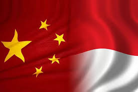
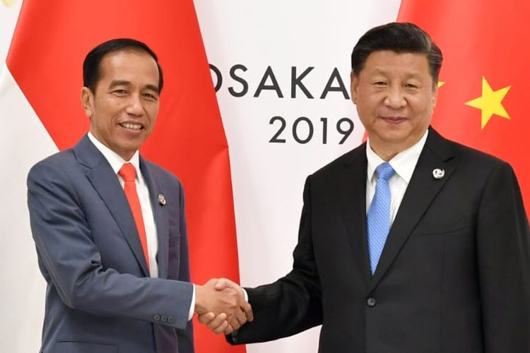
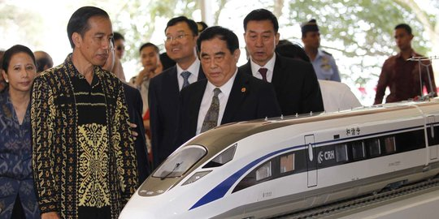

  
Hubungan Kerjasama Bilateral adalah Kerjasama antara dua negara untuk mencapai tujuan bersama dalam berbagai sektor dan bidang. Seperti ekonomi, budaya, teknologi, sosial, politik, dan lain-lain. Kerjasama ini menguntungkan kedua pihak dan menghormati. Tujuan utama dalam kerjasama bilateral, meningkatkan hubungan diplomatik antar kedua negara, mendukung inovasi melalui pertukaran budaya, teknologi, dan pendidikan, serta saling meningkatkan ekonomi kedua negara. Kerjasama ini biasa memiliki perjanjian disebut Memorandum of Understanding (MoU) yang berarti nota kesepakatan antar negara untuk bekerja sama.
Hubungan kerjasama secara bilateral berperan penting dalam mencapai SDGs (Sustainable Development Goals). Dengan kolaborasi atau kerjasama dengan negara lain dapat mengatasi tantangan globa. Dalam SDGs, memfokuskan kepada isu yang terdapat secara global, sedangkan kerjasama bilateral dapat menjadi perantara atau cara penyelesaian isu tersebut. Sebagai contoh, banyak negara yang maju memberikan bantuan terhadap negara yang sedang berkembang dalam bidang teknologi, infrastruktur, dan lain-lain. Kerjasama secara bilateral dapat menciptakan saling ketergantungan yang dapat memperkuat dan mempererat hubungan diplomatik serta mendukung agar dapat mencapai target SDGs pada tahun 2030.
1) Bidang Ekonomi: Membuka akses pasar global untuk produk Indonesia, meningkatkan perdagangan, investasi asing, memperkuat stabilitas ekonomi
2) Bidang Politik: Menjaga stabilitas politik dengan diplomasi dan kerjasama antar negara dan meningkatkan kerjasama yang dapat mengatasi isu/ tantangan global
3) Bidang Pendidikan: Memberikan akses program pertukaran bagi pelajar dan beasiswa Indonesia, meningkatkan kualitas pendidikan dengan kerjasama antar negara, juga memperkenalkan budaya Indonesia kepada negara asing melalui program pertukaran
4) Bidang Sosial Budaya: Menumbuhkan kerjasama dalam melestarikan budaya dan warisan dunia, meningkatkan pemahaman terhadap keragaman budaya, serta memperkenalkan budaya Indonesia ke dunia.
Hubungan bilateral Indonesia dengan Negara China bekerjasama dalam beberapa bidang penting, yaitu investasi, perdagangan, pendidikan, kebudayaan, serta kesehatan.
1) Investasi: China dipandang negara maju dalam hal ekonomi, teknologi, dan infrastruktur. Dalam bidang investasi, China merupakan salah satu investor terbesar di Indonesia. Investasi China dalam banyak sektor yang strategis seperti dalam infrastruktur, manufaktur, teknologi. Proyek Kereta Cepat Jakarta-Bandung yang merupakan bagian dari Belt dan Road Initiative (BRI). Ini adalah contoh nyata China berperan, menginvestasi, dan kerja sama dengan Indonesia dalam pembangunan modern.
Selain di Jakarta, China juga investasi dalam sektor pertambangan, seperti pembangunan smelter nikel di Sulawesi. Investasi dari China ini membantu Indonesia dalam meningkatkan kapasitas produksi. Juga mendukung hilirisasi sumber daya alam yang dapat meningkatkan produk ekspor Indonesia.
2) Perdagangan: China adalah mitra dagang terbesar Indonesia yang berarti China merupakan negara dengan volume perdagangan bilateral tertinggi dengan Indonesia. Ekspor utama Indonesia ke China mencakup komoditas seperti kelapa sawit, karet, batu bara. Sementara untuk impor utama Indonesia dari China adalah barang-barang elektronik, mesin, dan tekstil. Hal Ini mendukung pertumbuhan perdagangan bagi kedua negara yang memanfaatkan nya dari ASEAN-China Free Trade Agreement (ACFTA).
3) Pendidikan: Pendidikan di China memiliki reputasi yang baik dengan sistem dan jasa yang bagus dan berkualitas. Kerjasama pendidikan antara Indonesia dan China dilaksanakan melalui program beasiswa dan pertukaran pelajar. Banyak mahasiswa dari Indonesia mengikuti pertukaran exchange dan melanjutkan studi lanjutnya di China dengan bantuan beasiswa dari pemerintahan China. Seperti dalam Institut Konfusius didirikan di Indonesia yang mengajarkan bahasa Mandarin dan memperkenalkan budaya Indonesia.
4) Kebudayaan: Indonesia dan China sering mempromosikan hubungan budaya dengan acara-acara. Seperti pameran budaya ataupun pertunjukan tradisional yang memperkuat kedua negara dalam memahami dan mengenal tradisi negara asing.
5) Kesehatan: Hubungan bilateral Indonesia dan China tambah terlihat selama terjadinya pandemi COVID-119. Dimana China menjadi salah satu mitra utama Indonesia dalam penyediaan vaksin serta transfer teknologi yang mendukung produksi lokal. Kolaborasi penelitian medis juga termasuk pengembangan obat-obat, alat kesehatan, serta pengendalian penyakit yang dapat menular. Kerjasama ini memperkuat sistem kesehatan pada masing kedua negara bagi masa depan.